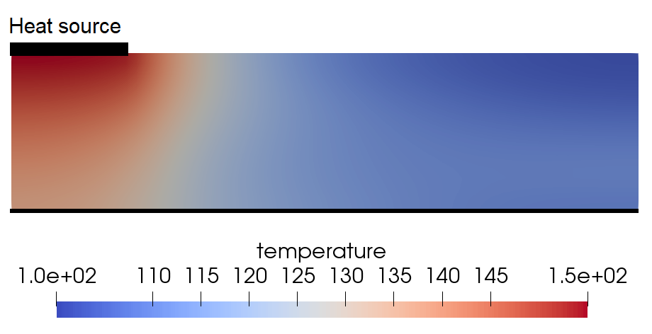

Phonon Boltzmann Transport
The script file: example-bte2d-bp.jl (band-parallel), example-bte2d-cp.jl (cell-parallel), example-bte2d-gpu.jl (GPU)
The BTE is a particularly challenging problem due to being 7-dimensional. Since it has the form of an advection equation, the finite volume method is a good choice. Since there are many loosely coupled degrees of freedom per cell, the computation can be partitioned in different ways. This example also demonstrates the use of callback functions that are used for the boundary conditions. It also includes a post-step function that updates the temperature values. Many model-specific functions and parameters are included in separate files.
The following description is for the 2D case. A similar code can be written for 3D. Note that many details are omitted on this page. For a full code listing, see the links above.
using Finch
initFinch("BTE2d");Then set up the configuration. This example sets dimensionality of the domain and the solver type(FV).
domain(2) # dimension
solverType(FV) # FV for finite volume
timeStepper(EULER_EXPLICIT)
setSteps(1e-12, 1000);Use the built-in simple mesh generator to make the mesh and set up all node mappings.
mesh(QUADMESH, # quad elements
elsperdim=[120, 120], # elements in each direction: 120 x 120 uniform grid
interval=[0, 525e-6, 0, 525e-6], # interval in each direction
bids=4, # 4 boundary IDs for this mesh correspond to left, right, bottom, top
partitions=1) # When partitioning bands, don't partition meshDefine the indices, variables, and coefficients. Note the use of CELL to define this variable as cell averages.
direction = index("direction", range = [1,ndirs])
band = index("band", range = [1,nbands])
I = variable("I", type=VAR_ARRAY, location=CELL, index = [direction, band])
...
Sx = coefficient("Sx", dir_x, type=VAR_ARRAY)
...The boundary and initial conditions are specified.
boundary(I, 1, FLUX, "isothermal_bdry(I, vg, Sx, Sy, band, direction, normal, 350)")
boundary(I, 2, FLUX, "isothermal_bdry(I, vg, Sx, Sy, band, direction, normal, 300)")
boundary(I, 3, FLUX, "symmetric_bdry(I, vg, Sx, Sy, band, direction, normal)")
boundary(I, 4, FLUX, "symmetric_bdry(I, vg, Sx, Sy, band, direction, normal)")
initial(I, [equilibrium_intensity(center_freq[b], delta_freq[b], init_temp, polarizations[b]) for d=1:ndirs, b=1:nbands])A post-step function allows temperature updates after each time step.
postStepFunction(()->update_temperature(temperature.values, temperatureLast.values, I.values, beta.values,
center_freq, delta_freq, converged, polarizations, band_parallel=true));The PDE is entered in a conservation form.
conservationForm(I, "(Io[band] - I[direction,band]) * beta[band] + surface(vg[band] * upwind([Sx[direction];Sy[direction]] , I[direction,band]))")
Here the upwind(S, I) function applies upwinding to the advective term (S.n)u with advection velocity (Sx, Sy).
If you wish to inspect or modify the generated code, use the exportCode function. To then use the previously exported code, rather than generating new code, use importCode.
exportCode("BTE2dcode") # exports to BTE2dcode.jlFinally, solve for I.
solve(I);End things with finalizeFinch() to finish up any generated files and the log.